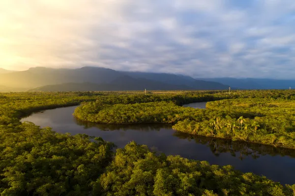
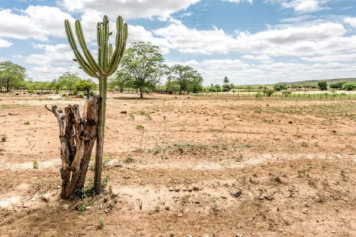

Climas do Brasil
Identifica-se seis tipos de climas no Brasil, sob a influência de diversos fatores climáticos, dentre os quais se destacam latitude, massas de ar e maritimidade.
Os climas do Brasil são bastante variados em função da atuação de fatores climáticos, como a latitude, a maritimidade e as massas de ar. Com base em sua análise, identifica-se a ocorrência de seis tipos:
- equatorial;
- semiárido;
- tropical;
- tropical de altitude;
- tropical atlântico;
- subtropical.
Resumo sobre climas do Brasil
- A latitude, a maritimidade e as massas de ar são os principais fatores condicionantes dos climas no Brasil.
-
Identifica-se hoje seis tipos de climas no Brasil:
- Equatorial: quente e úmido.
- Semiárido: quente e seco, com chuvas escassas e mal distribuídas.
- Tropical: marcado por duas estações do ano bem definidas, uma quente e úmida e a outra mais fria e seca.
- Tropical de altitude: ocorre em altitudes superiores a 800 m e é caracterizado por temperaturas mais amenas que no tropical típico. Há o registro de geadas no inverno pela ação de massas de ar frias.
- Tropical atlântico: caracterizado por elevada umidade e chuvas intensas, que se concentram nos meses de inverno.
- Subtropical: mercado pelas baixas temperaturas, inverno frio e eventual ocorrência de geada e precipitação na forma de neve. Predominante no Sul do Brasil.
Tipos de climas do Brasil
Os diferentes tipos de clima que ocorrem num determinado território são condicionados pelo que chamamos de fatores climáticos. No Brasil, um país de dimensões continentais, muitos fatores atuam em conjunto e dão origem aos seis tipos de climas de que temos conhecimento hoje. Dois deles se destacam, a maritimidade e as massas de ar.
Não podemos nos esquecer ainda da latitude. A maior parte do território brasileiro está situada na Zona Tropical do planeta Terra, caracterizada pela maior incidência de calor.
Dessa forma, identifica-se seis tipos de clima no Brasil. São eles:
- equatorial;
- tropical semiárido (ou simplesmente semiárido);
- tropical;
- tropical atlântico (ou tropical úmido);
- tropical de altitude;
- subtropical.
Mapa dos climas do Brasil
O mapa abaixo mostra a ocorrência espacial de cada um dos seis tipos climáticos brasileiros.
Características dos climas do Brasil
Os climas brasileiros são, no geral, quentes e com períodos bem definidos de umidade e de secas ou redução da precipitação. Existem, entretanto, muitas variações locais. Vamos analisar, na sequência, as principais características dos climas do Brasil.
-
Equatorial
O clima equatorial do tipo quente e úmido ocorre na região Norte do país, abrangendo os estados do Amazonas, Pará e parte de Roraima, Rondônia, Acre, Maranhão e Mato Grosso. Dispõe de elevado grau de umidade, mesmo sob a influência de massas continentais, o que se deve à presença da Floresta Amazônica. Com isso, as médias pluviométricas são bastante elevadas, com a ausência de períodos de seca ou estiagem. Os locais onde esse clima ocorre registram anualmente um volume de chuvas entre 1500 mm e 2500 mm. As temperaturas são elevadas durante todo o ano, com baixa variação de um período a outro, isto é, apresentam baixa amplitude térmica. As médias variam entre 25 ºC e 28 ºC. Quando a massa polar possui força o suficiente para avançar pelo interior do Brasil durante os meses de inverno e atinge regiões de clima equatorial, observa-se a queda brusca das temperaturas, fenômeno chamado de friagem.
 -
Semiárido
O clima semiárido ocorre em parte da região Nordeste do país, abrangendo o leste do Piauí, sudoeste do Ceará, norte da Bahia e uma parcela ou todo o oeste dos estados do Rio Grande do Norte, Paraíba, Pernambuco, Alagoas e Sergipe. As características mais marcantes desse clima são a baixa umidade e o longo período em que há baixo ou nenhum registro de chuvas, podendo se estender de junho a dezembro. A pluviosidade anual varia na faixa de 250 mm a 750 mm, e as chuvas não ocorrem de forma homogênea no território. Essa é uma das principais razões pelas quais a área de abrangência do semiárido é conhecida como Polígono das Secas. Além da escassez, esse tipo climático é marcado pelas elevadas temperaturas durante o ano, variando entre 25 ºC e 27 ºC. Tais valores podem cair quando massas de ar frio chegam à região, as quais provocam também chuvas.
 -
Tropical
O clima tropical, por vezes chamado também de tropical típico, abrange quase todas as regiões do Brasil. Está presente em todo o Centro-Oeste, exceto no norte do Mato Grosso, em parte da região Nordeste, no Sudeste, abrangendo São Paulo e Minas Gerais, na região Sul, na porção noroeste do Paraná, e também em uma pequena porção de Roraima, no Norte. Caracteriza-se pela presença marcante de duas estações do ano. Uma delas é quente e úmida, que se estende de dezembro a março e ocorre por influência do avanço de massas de ar úmidas (Equatorial e Tropical Atlântica), ao passo que a outra, o inverno, apresenta temperaturas mais amenas e tempo seco. A amplitude térmica do clima tropical fica na faixa dos 5 ºC aos 7º C no período de um ano, com variação de mínimas e máximas entre 18º C e 27º C, superando 30 ºC nos meses mais quentes. Os registros anuais de chuva variam de 750 mm a 1500 mm.
-
Tropical de altitude
O clima tropical de altitude ocorre nos planaltos elevados da região Sudeste do Brasil, predominando em terrenos localizados acima de 800 metros de altitude nos estados de São Paulo, Minas Gerais, Rio de Janeiro e Espírito Santo. Assemelha-se ao clima tropical típico, com uma estação do ano quente e úmida, que é o verão, e outra fria e seca, estendendo-se de março a setembro aproximadamente. Diferentemente do primeiro tipo, entretanto, a altitude proporciona temperaturas mais amenas, que variam entre 15 ºC e 22 ºC, com amplitude térmica anual que pode chegar a 9 ºC. Durante os meses correspondentes ao inverno, sob a influência de massas de ar frias, registra-se em algumas localidades a ocorrência de geadas. Os verões são mais amenos que no clima tropical típico, mas são bastante chuvosos, principalmente nos meses de dezembro e janeiro. O volume acumulado de chuvas pode chegar a 1500 mm.
-
Tropical atlântico
O clima tropical atlântico, conhecido também como litorâneo úmido, ocorre no litoral leste brasileiro, compreendendo estados do Nordeste até o Sul do país. Sob forte influência da maritimidade e das massas Equatorial Atlântica e Tropical Atlântica, esse clima é caracterizado pelo alto teor de umidade e grande volume pluviométrico nos locais onde ocorre. O período chuvoso corresponde aos meses de outono e inverno, registrando anualmente de 1500 a 2000 mm de precipitação. Já as temperaturas variam de amenas a quentes, variando na faixa dos 18 ºC aos 26 ºC.
-
Subtropical
O clima subtropical ocorre nas terras situadas abaixo do Trópico de Capricórnio, portanto, na porção do território nacional situada na Zona Temperada Sul do planeta, que corresponde aos estados da região Sul, ao sudeste de São Paulo e à porção meridional do Mato Grosso do Sul. Trata-se do clima mais ameno entre todos os descritos até então, com temperaturas que variam de 18 ºC até valores negativos durante o inverno, estação que registra intensas ondas de frio pela influência da Massa Polar Atlântica. Os verões, entretanto, podem registrar temperaturas bastante elevadas. A pluviosidade fica em torno de 1250 mm anuais, sendo as chuvas bem distribuídas durante o ano. No inverno, entretanto, há o registro de geadas e, em determinadas localidades, precipitação na forma de neve.